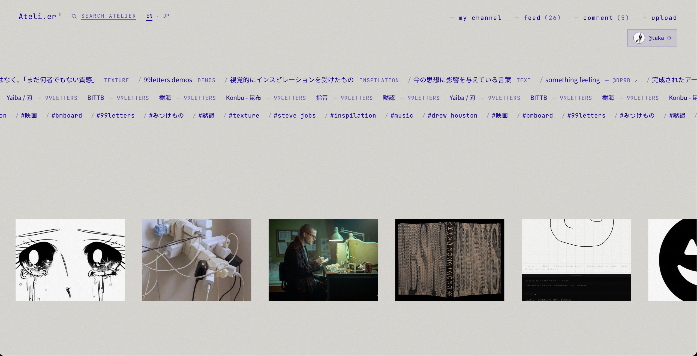
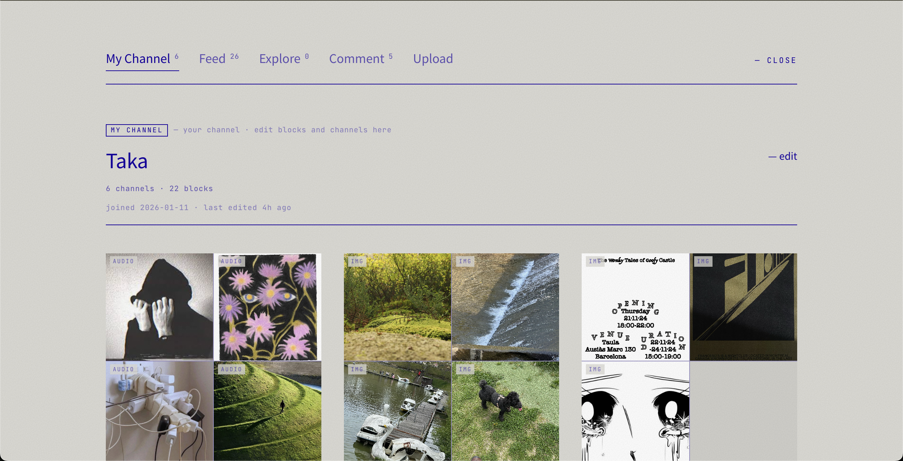
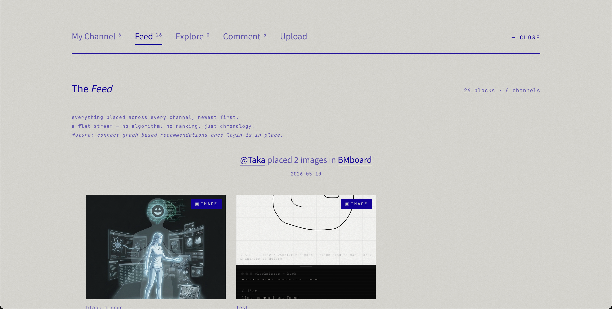
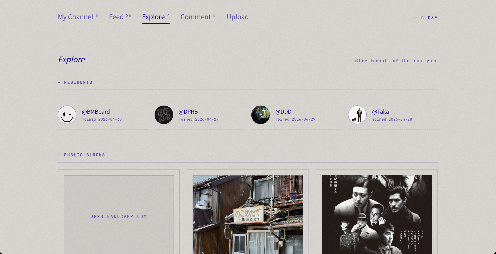
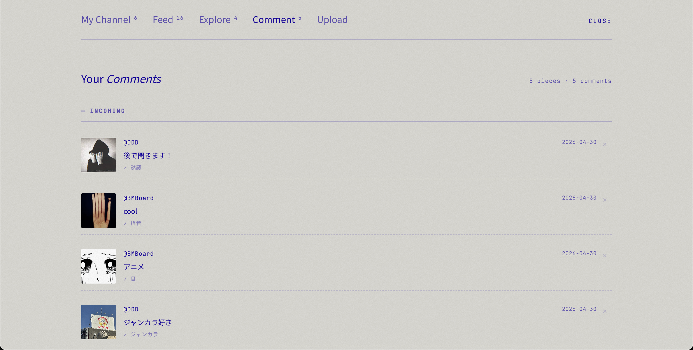
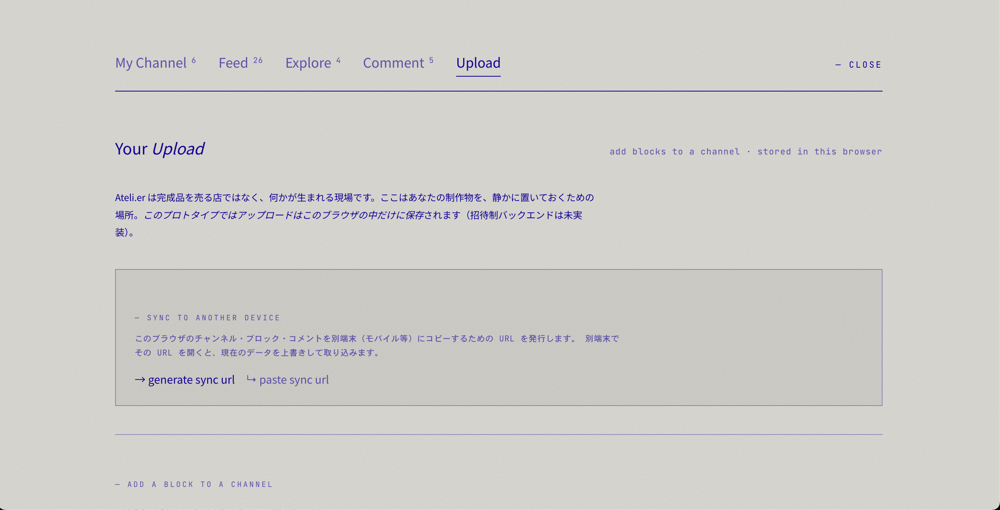
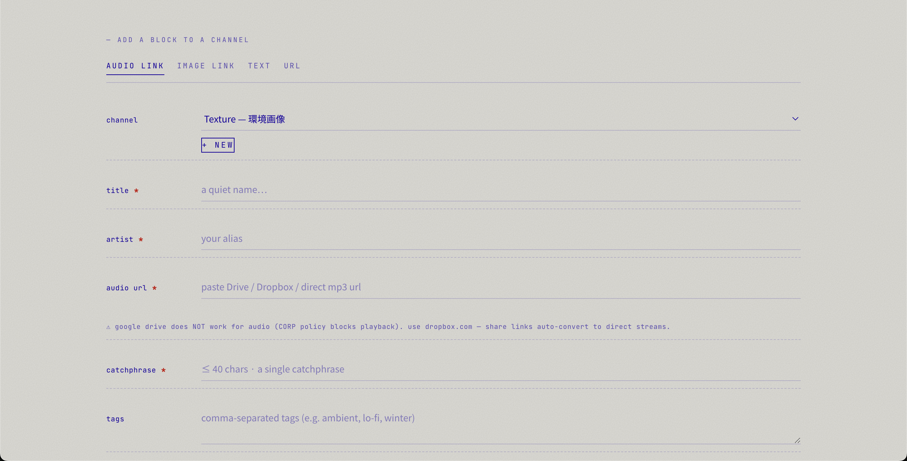
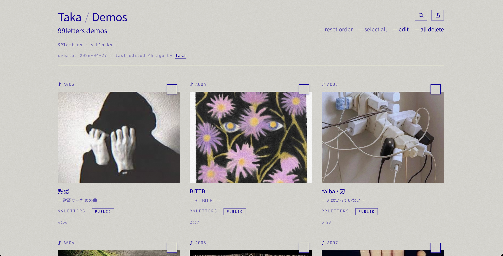
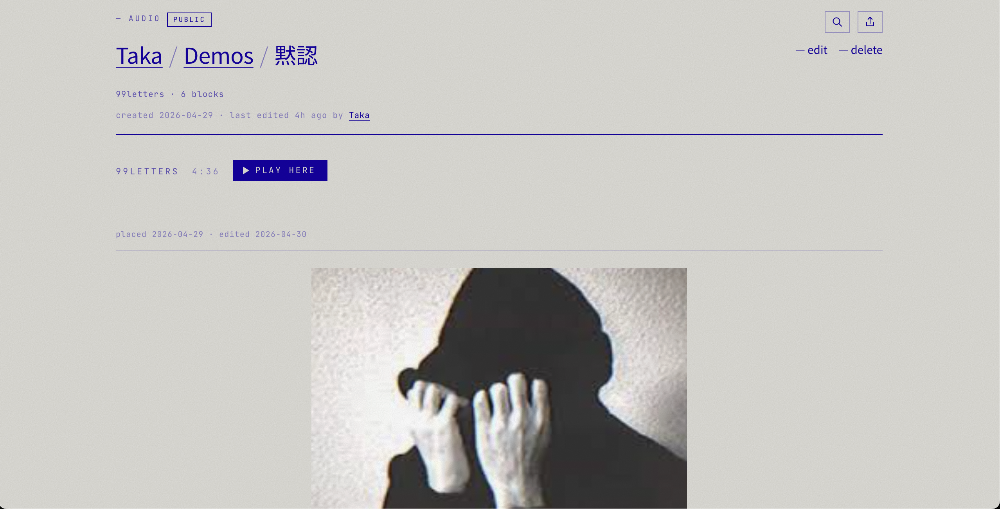
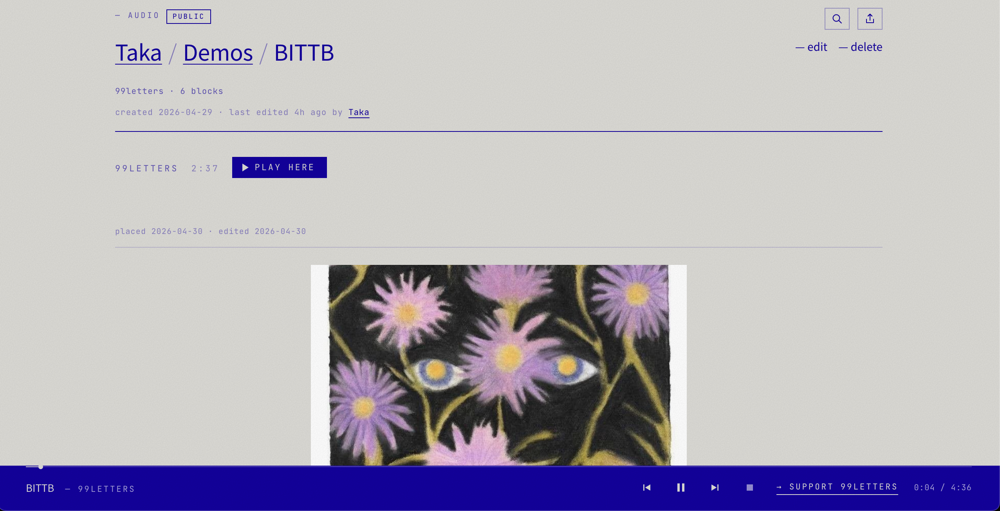

画面のスクショで、5 つのタブと core 機能 (Connect) を解説します。
はじめての方は上から順に。慣れている方は気になる項目に飛んでください。
A visual walk-through of the 5 tabs and the core Connect feature.
New users: read top to bottom. Returning: jump to what interests you.
アクセスして最初に出てくるのが トップページ。横スクロールするテキストの帯と、画像のサムネイル列で、住人たちが置いた block がランダムに流れます。
The top page is what you see first. Horizontal marquees of text and image thumbnails — blocks left by residents, scrolling at their own pace.
右上に my channel · feed · comment · upload のタブ。これがアトリエの心臓部です。
The top-right has tabs: my channel · feed · comment · upload. This is the heart of Atelier.

自分が作った channel と、その中に置いた block の一覧。アトリエの中で「自分の場所」になります。
A list of channels you've created and the blocks you've placed inside them. Your space within Atelier.
Taka) が出るので、自分が誰として見えてるかがわかります。タイトル直下に 6 channels · 23 blocks のように数字が出ます。グリッドはすべて自分が置いた block。
Tip:Taka) is shown in the title, so you know how others see you. Right under the title: 6 channels · 23 blocks. Every card in the grid is something you placed.

自分のすべての channel に置いた block を 新しい順 にまとめたタイムライン。アルゴリズムなし、ランキングなし、いいね数なし。flat な記録 です。
A flat, chronological timeline of every block you've placed — newest first. No algorithm. No ranking. No like counts. Just a record.
例: @Taka placed 2 images in BMboard のように、誰が・どの channel に・何を置いたかが 1 行で出ます。
Format: @Taka placed 2 images in BMboard — who, what, where, in one line.

アトリエに住む 他の人たち (Residents) と、彼らが Public に公開した block をまとめて見る場所。
A list of other residents and the blocks they've made public.

自分の block に届いた 短いコメント の一覧。アトリエでは「コメント = ひとこと」と決めています。 返信通知も、ネストも、長文もありません。短く・ひとつだけ。
A list of short single-line replies placed on your blocks. No reply threads. No nesting. No long-form. Just brief, singular.
画像のように @DDD「後で聞きます！」 といった一言が時系列で並びます。
As shown: @DDD "後で聞きます!" — listed in time order.

アトリエの central な動作: block を channel に置く こと。 Atelier は完成品を売る場ではなく、何かが生まれる現場です。 ここはあなたの制作物を、静かに置いておく場所です。
The central action: place a block in a channel. Atelier isn't a place to sell finished work — it's a working site. Leave things here, quietly.
localStorage でローカルキャッシュとして残っているので、オフラインでも自分のものは見られます。localStorage so you can browse your own offline.
画面を下にスクロールすると 「add a block to a channel」 フォームが出ます。
Scroll down to find the "add a block to a channel" form.
AUDIO LINK · IMAGE LINK · TEXT · URL の 4 タブ。これが block の 4 種類 です。先に種類を選ぶ → channel を選ぶ → タイトル等を入力 → 保存。Google Drive / Dropbox / 直接 mp3 url のような 外部リンク方式。アップロードではなく URL を貼ります。
Tip 2:AUDIO LINK · IMAGE LINK · TEXT · URL. These are the 4 block types. Choose a type → pick a channel → fill in the title and details → save.Google Drive / Dropbox / direct mp3 url). You paste a URL, not upload a file.

My Channel から channel を 1 つ選ぶと、その中の block 一覧 が出ます。
画像の例は Taka / Demos / 99letters demos — 6 blocks。
パンくず (Taka / Demos) で 1 つ上の階層に戻れます。
Tap a channel from My Channel to see the blocks inside it.
In the example: Taka / Demos / 99letters demos with 6 blocks.
Use the breadcrumb (Taka / Demos) to step back.
block の右上の □ アイコンは Public / Draft の表示。Public は他の住人にも見える、Draft は自分だけ。
The □ badge on each block shows Public / Draft state. Public is visible to residents; Draft is only you.

block 1 つを開いた画面。パンくず + メタ情報 (channel, blocks 数) + 本体 (画像 / 音 / テキスト / URL) + コメント欄。
AUDIO block の場合は PLAY HERE ボタンで再生開始。再生中は画面下にプレイヤーバーが固定されます。
A single block opened. Breadcrumb + meta (channel, block count) + body (image / audio / text / url) + comments.
For AUDIO: tap PLAY HERE. A player bar fixes to the bottom while playing.


Atelier ならではの機能 「connect」。 Explore で見つけた 他人の public block を、自分の channel に 紐付ける (pin) 動作です。 reblog / repost と似ているけど、並べる側の文脈を主役にする違いがあります。
The core feature: connect. Pin another resident's public block into your own channel. Similar to reblog / repost — but the emphasis here is on your context of placement, not the reblog itself.
たとえば 「@DDD の音源」と「@BMBoard の画像」を、 自分の channel "影響源" に並べる。すると、複数の住人の作品が、あなたの編集行為によって 新しい意味を持つ。これが connect の本質です。
Example: pin @DDD's audio and @BMBoard's image into your channel called "influences". The blocks gain new meaning through your editorial act — this is the core of connect.
Explore でみつけた block ↓ ┌─────────────┐ ┌─────────────┐ │ @DDD │ │ @BMBoard │ │ audio block │ │ image block │ │ "夜の音" │ │ "黒板の渦" │ └─────┬───────┘ └─────┬───────┘ │ ↓ connect │ └───→ "影響源" channel ←──┘ ↑ (あなたの channel) → あなたの編集行為で、別の文脈が生まれる Found in Explore ↓ ┌─────────────┐ ┌─────────────┐ │ @DDD │ │ @BMBoard │ │ audio block │ │ image block │ │ "Night Air" │ │ "Blackboard"│ └─────┬───────┘ └─────┬───────┘ │ ↓ connect │ └───→ "Influences" ←─────┘ ↑ (your channel) → Your placement creates a new context
→ connect ボタンをタップ→ connect button招待制ですが、コードがあれば、どなたでも。 Invite-only. With a code, anyone is welcome.
Atelier を開く → open Ateli.er →